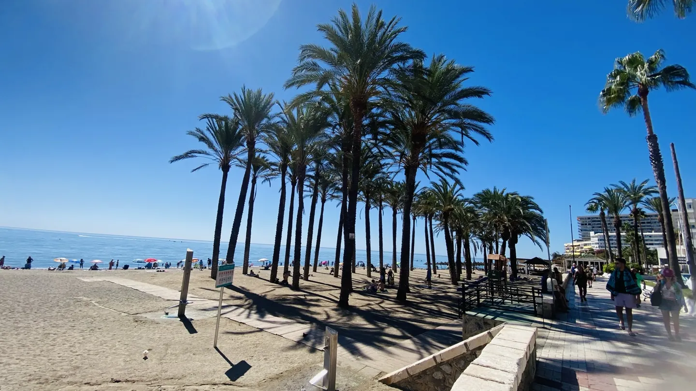
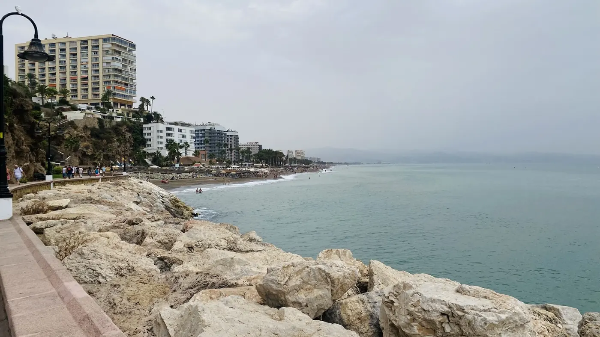
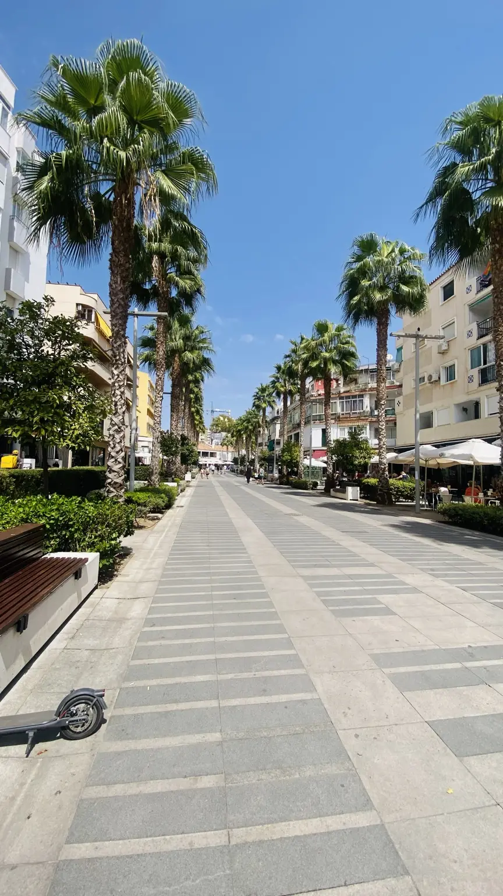

ANDALUCÍA · COSTA DEL SOL · PEOPLE & PLACES
© Archivo fotográfico TORREMOLINOS · Todos los derechos reservadosTORREMOLINOS
Vive a tu maneraMás que playa. Cultura, historia, libertad, gastronomía y una ciudad que nunca se detiene.
Descubre qué pasa en la ciudad ↗✺ LOCAL & REALFotos originales
♡ EVERYONE BELONGSCultura inclusiva
◈ UPDATED EVENTSFuentes contrastadas
01 / EXPLORE
Una ciudad. Mil planes
Descubre Torremolinos desde la vida local y decide cómo quieres vivir cada momento.
LOCAL LENS / VISUAL JOURNAL
La ciudad desde dentro
Fotografías propias de Torremolinos. Palmeras, paseos, rincones y esa luz mediterránea que no necesita ser inventada.
Abrir nuestro diario fotográfico ↗
02 / GASTRONOMÍA
Guía completa de restaurantes ↗La ciudad se saborea
Selección editorial prioritaria solicitada para el proyecto; no representa una clasificación ni publicidad encubierta. Carta y lanzamiento de ANDALUZ pendientes de confirmación.
SOUND OF TORREMOLINOS · LUNE_X
La ciudad tiene su propio ritmo
El Mediterráneo también se escucha. Descubre la canción Next Stop: Torremolinos y el universo de Welcome to the Paradise
Pulsa Play · LUNE_X · Dirección creativa humana, producción asistida por IA© Archivo fotográfico TORREMOLINOS
03 / NIGHTLIFE & CULTURE
La noche también cuenta historias
INFINITY Festival · 16–21 junio 2027
MadBear Beach · 6–17 agosto 2027
Daddy Week · fecha todavía por verificar
Explorar agenda completa ↗
04 / TORREMOLINOS STORIES
Todas las historias ↗